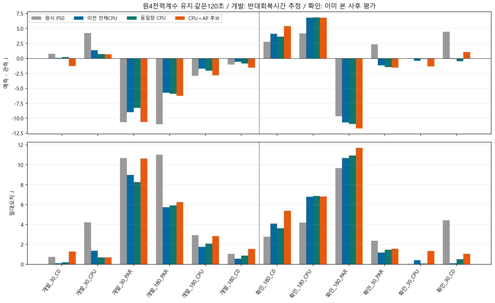
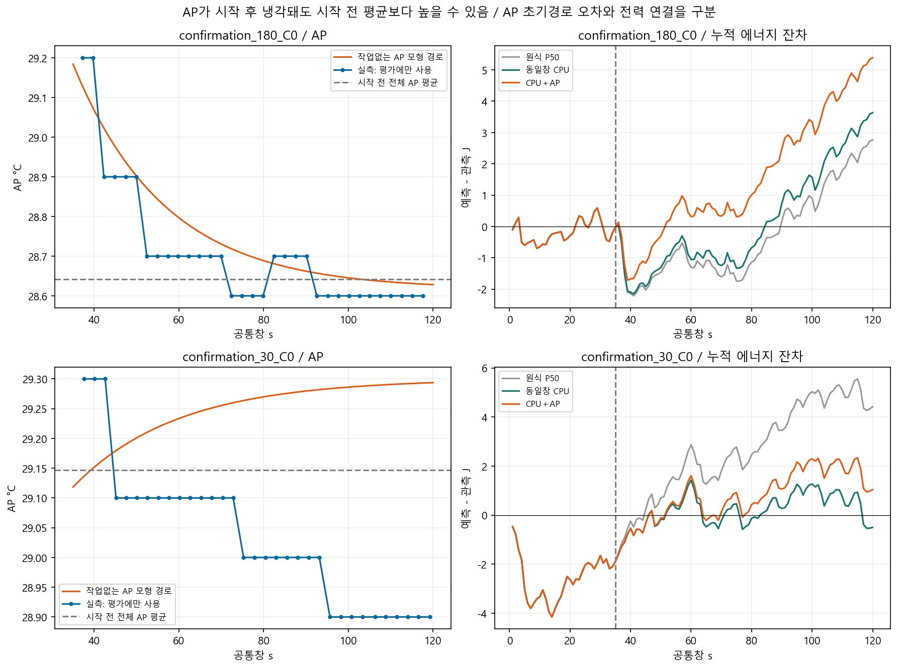
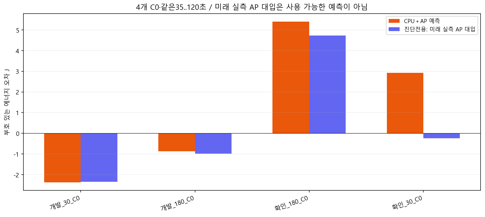

| 같은 확인6·원4전력계수 | 원식 P50 | 이전 전체CPU | 동일창CPU | CPU＋AP |
|---|---|---|---|---|
| 120초 평균 절대J | 3.913 | 3.876 | 3.913 | 4.637 |
| 최대 절대J | 9.682 | 10.690 | 10.946 | 11.701 |
AP를맞추려고미래실측온도를예측에넣지않았습니다. 기존 pre R/H와β/τ로작업없는초기AP경로를계산했고,동일창CPU대조로창변경의효과를분리했습니다.2열수치rank와물리적인과식별은다릅니다.
수식·원인분해·판정 · 의존성·재현명령 · 전량·정확한창·부호오차 · 검증

회복180 C0는이후냉각해도미래AP평균이pre평균보다높습니다. 회복30 C0는고정초기AP경로가가열을계산했지만관측은냉각했습니다. 기존AP모형의유효reference는주변온도가아닙니다.

4개무부하C0에서만실측미래AP를고정계수에사후대입했습니다. 회복180 미래85초오차5.399→4.727J가남아AP예측만의문제가아닙니다. 회복30은2.927→−0.240J로변해AP예측오차의기여3.167J를확인했습니다. 이대입은사용가능한예측/독립확인/선택기가아닙니다.

기존other CPU 기록까지 사후 대입해도 회복180 C0의 미래85초 잔차4.36049J가 남았습니다. 현재 두 입력의 미래값 오차만으로 설명할 수 없는 관계식/기준값 문제가 있으며 숨은 물리 원인은 미확정입니다. 진단전용 두입력 대입4조건. 예측/선택/RL에 사용하는 값이 아닙니다.
진단4조건전량표 · AP/CPU산술분해 · 관측범위밖표시. 실제일정조건부/사후평가·미래센서는오차평가에만사용·live전달미구현·A24 raw=mA/절대J미인증·S26계수비혼합·정확도PASS/정책우월성없음.